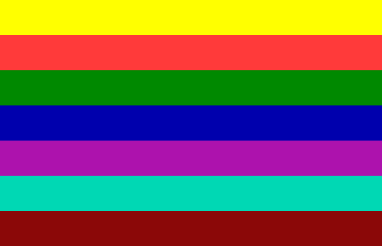
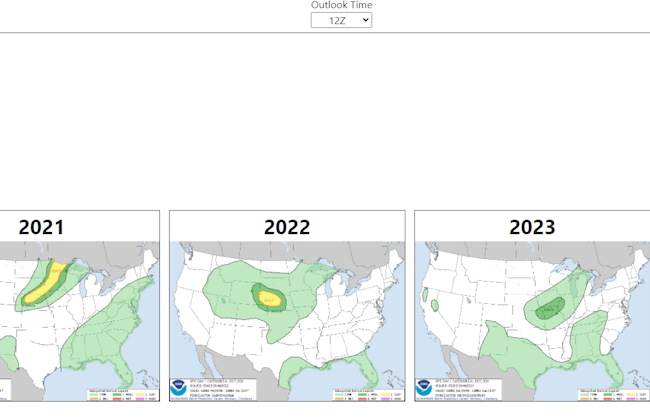
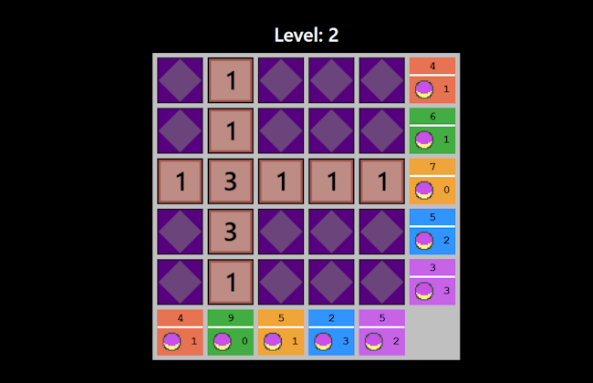
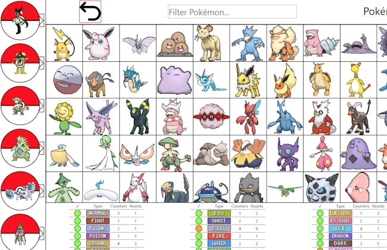

Sam's Stuff
About
Hey I'm Sam and I like doing stuff online. This is my website where I put different projects that might be interesting, fun, or I just need them to be public! I just finished my MSc in computer science at the University of Lincoln, and have a particular passion for internet technologies and internet culture.
I also enjoy speedrunning some of my favorite games. At one point I held the Subnautica Any% world record in Survival Glitched, Survival Glitchless, and Creative Glitched. I also had a top 10 run in Ori and the Will of the Wisps (No out of bounds)! I am still fairly active in the Subnautica Speedrunning Discord, so come and say hi!
I also have an interest in tracking severe weather around the globe, such as hurricanes, tornadoes, and flooding events. I hope that one day I can travel the world and see the best storms on earth in person.
I've been a fan of e-sports since I watched my first League of Legends world championship, and haven't been able to escape since. I still follow the professional scene in League of Legends, and enjoy watching the occasional CS Major or R6 invitational. I love hot-takes so if you got any then shoot me a DM on Discord! Also a long suffering Tottenham Hotspur fan, so there's no need to send me a DM about that, I've heard them all :). If you're a fellow sufferer you have my sympathies and condolences.
My Links
My Stuff

Video Game Tier List
A bunch of reviews of PC-based video games that I've played, ranked into a tier list for convenience. These are opinions so they'll probably be drastically different to your own.

SPC Archive Viewer
Easier way to view the SPC outlook archive. Select overall, tor, hail or wind, and the time of the outlook. Also shows the previous four years.

Voltrob Flip
Voltrob flip game. Similar to another game that shows up in Pokémon heart gold/soul silver. Either play normally, get the algorithm to detect the next best move, or input your own values to help solve your own game on a different device.

Casual Pokémon Teambuilder
Tool that helps you build a balanced Pokémon team for your casual playthrough! Build your team, select their location within the game, and create a savable image that you can refer to throughout your playthrough!